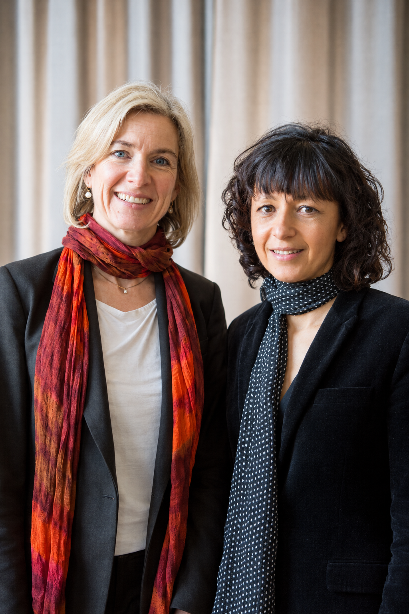

Grandes inventores del siglo XXI
Personas cuyas ideas estan cambiandola ciencia, la salud y la tecnologia.

Inteligencia Artificial
Demis Hassabis
Científico británico y cofundador de DeepMind. Su equipo creó sistemas de IA capaces de resolver problemas cientificos complejos, como predecir la forma de las proteínas. Una de sus creaciones, AlphaFold, predijo la estructura de más de 200 millones de proteínas, y antes AlphaGo venció al campeón de Go Lee Sedol en 2016.
Nobel Quimica 2024

Edición Genetica
Jennifer Doudna y Emmanuelle Charpentier
Cientificas que desarrollaron la tecnología CRISPR, una herramienta que permite editar genes con gran precisión. En 2012 demostraron que la proteína Cas9 corta el ADN en un punto exacto. Fue el primer Nobel de ciencias ganado solo por dos mujeres.
Nobel Quimica 2020
Medicina
Katalin Karikó y Drew Weissman
Sus investigaciones sobre el ARN mensajero fueron clave para el desarrollo de las vacunas contra la COVID-19. Descubrieron cómo modificar el ARNm para que el organismo no lo atacara, la base de las vacunas de Pfizer-BioNTech y Moderna.
Nobel Medicina 2023

Fisica Cuántica
John Martinis
Físico estadounidense que contribuyó al desarrollo de la computación cuántica y los qubits superconductores. Sus experimentos de los años 80 mostraron efectos cuánticos en circuitos eléctricos de tamaño macroscópico. Después lideró el equipo de Google que presentó el procesador Sycamore, de 53 qubits, en 2019.
Nobel Fisica 2025

Bioquímica
David Baker
Científico que diseñó proteínas de novo, abriendo nuevas posibilidades en la medicina y la biotecnología. Dirige el Instituto de Diseño de Proteínas de la Universidad de Washington y creó el software Rosetta. En 2003 diseñó Top7, una proteína que no existía en la naturaleza. Hoy su equipo diseña proteínas para vacunas y medicamentos.
Nobel Quimica 2024

Química
Omar Yaghi
Desarrolló las estructuras metalorgánicas (MOF), materiales con aplicaciones en energía, medio ambiente y almacenamiento de gases. Un gramo de algunos MOF tiene una superficie interior similar a la de un campo de fútbol. Con ellos se puede capturar CO2 o incluso sacar agua del aire del desierto.
Nobel Quimica 2025